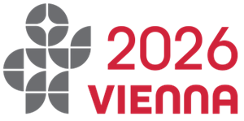
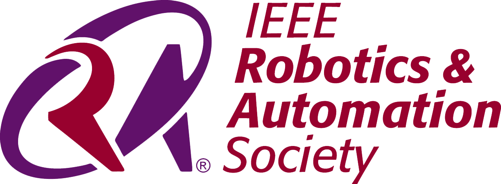

Connected Autonomous Robotic Systems Workshop - IEEE ICRA 2026

Connected Autonomous Robotic Systems Workshop - IEEE ICRA 2026
Professor, UC Berkeley
Senior Research Engineer at KDDI
Inria
Expertise: Connected Systems
Denis Efimov, a senior researcher at Inria, France, specializes in robust control, networked systems, and intelligent automation for complex robotics platforms.
KTH Royal Institute of Technology
Expertise: Data-driven manipulation and cloud robotics
Title: Towards Bootstrapping Dexterous Manipulation with Cloud Robotics
Florian Pokorny is an Associate Professor at KTH working on data-driven methods for robotic manipulation and cloud robotics.
TNO, Netherlands
Expertise: 6G Networks, Cloud Computing, Cybersecurity
Prachi Sachdeva (TNO, Netherlands) — tentative panelist with expertise in 6G networks, cloud computing, and cybersecurity.
Advances in communication technologies—ranging from WiFi and 5G to satellite and emerging 6G architectures—enable robots to operate not only as standalone units but also as interconnected systems that share information, coordinate actions, and access distributed intelligence, with applications and decision-making increasingly leveraging connectivity to edge and cloud resources.
By supporting capabilities such as offloading AI models, centralized perception and knowledge sharing, and anomaly detection, connectivity is becoming the backbone of scalable autonomy. At the same time, these developments underscore the importance of addressing fundamental network issues, such as latency, reliability, scalability, and security, which are crucial for real-time sensing, control, and coordination in robotic systems.
This workshop focuses on two complementary directions: how connectivity empowers robotics and autonomous systems, and how network systems can be advanced to meet the unique real-time challenges of robotics and autonomous systems. It will bring together researchers from robotics and communication networks to explore these challenges and opportunities at the intersection of autonomy and connectivity, to optimize robotic performance while ensuring safety, security, and robustness in connected autonomy.
We invite submissions exploring innovations in networked robotics systems, including safety, security, data-driven optimization, and cloud-edge collaboration. Papers should discuss cutting-edge research, relevant algorithms, or case studies that address connectivity in robotics.
| Time | Talk/Session | Speaker |
|---|---|---|
| 8:30 - 8:40 | Opening Remarks & Workshop Overview | Organizers: Introduction to the workshop objectives and scope |
| 8:40 - 9:00 | Keynote Talk 1: Digital Twins and Cloud-Based Automation | Ken Goldberg, UC Berkeley |
| 9:00 - 9:20 | Keynote Talk 2: The role and the network requirements of communications in robotics applications | Yoshinori Kitatsuji, KDDI Research |
| 9:20 - 9:40 | Keynote Talk 3: Towards Bootstrapping Dexterous Manipulation with Cloud Robotics | Florian Pokorny, KTH Royal Institute of Technology |
| 9:40 - 10:00 | Keynote Talk 4: To be added | TBD |
| 10:00 - 10:15 | Coffee Break & Networking | - |
| 10:15 - 11:15 | Technical Sessions: Network-Aware Robotics Solutions | Selected Speakers (Authors of Contributed Papers) |
| 11:15 - 12:00 | Panel of Experts from Academia and Industry to discuss opportunities and challenges in connectivity for robotics and autonomous systems | Panelists include the keynote speakers and Denis Efimov (senior researcher at Inria, France) |
| 12:00 - 12:30 | Closing Panel: Future Directions in Network-Enabled Autonomous Robotics and Final Remarks & Workshop Wrap-Up | Organizers |
Nokia Bell Labs (France)
mata.khalili@nokia-bell-labs.com
PhD Candidate (AI and Robotic Manipulation)
Specializes in real-world data curation using cloud robotics platforms; organizer of workshops and demos at IEEE IROS and CoRL
Research Scientist, Bosch
Investigates and demonstrates cloud-connected autonomous systems, including robots and vehicles